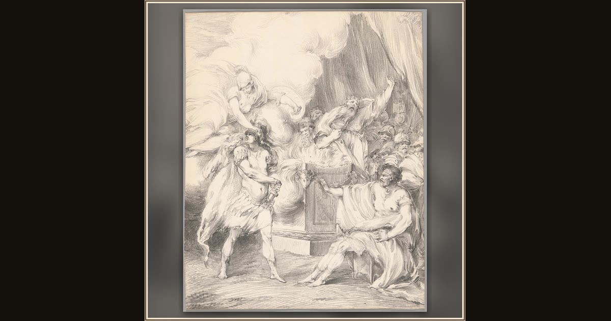

Achilles Restrained by Athena in Agamemnon's Tent, from Iliad, Book I
Johan Tobias Sergel · 1765/66 · Art Institute of Chicago
Achilles reaches for his sword, and Athena catches him by the hair (1.194–197). Sergel draws the interruption as the quarrel turns dangerous. Explore its place in Homer's Iliad, Book I, line 197.